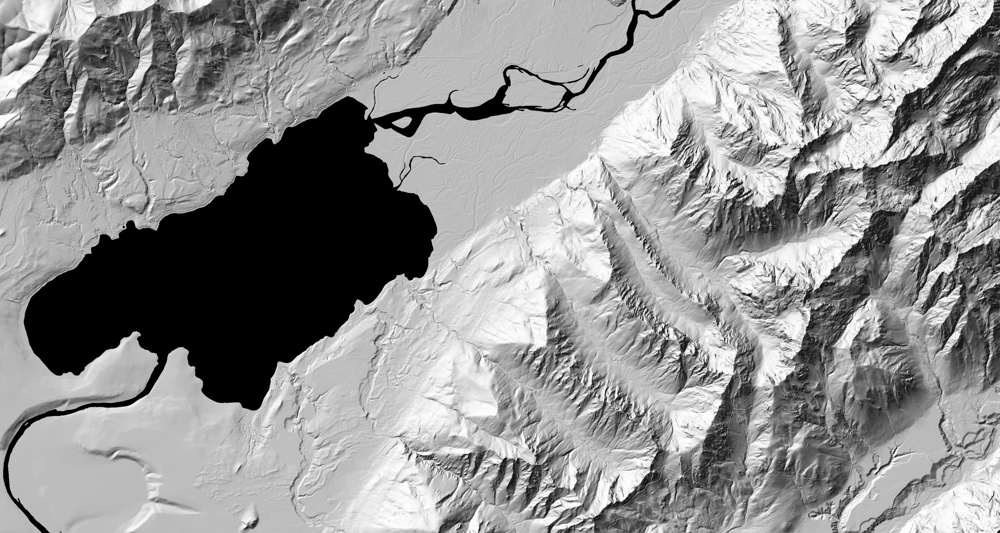
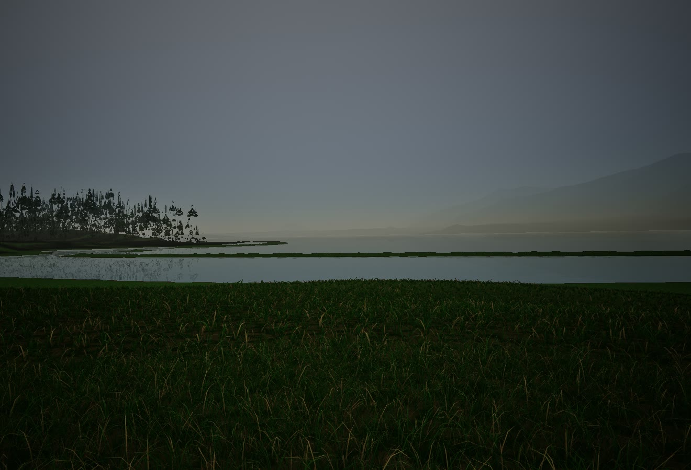
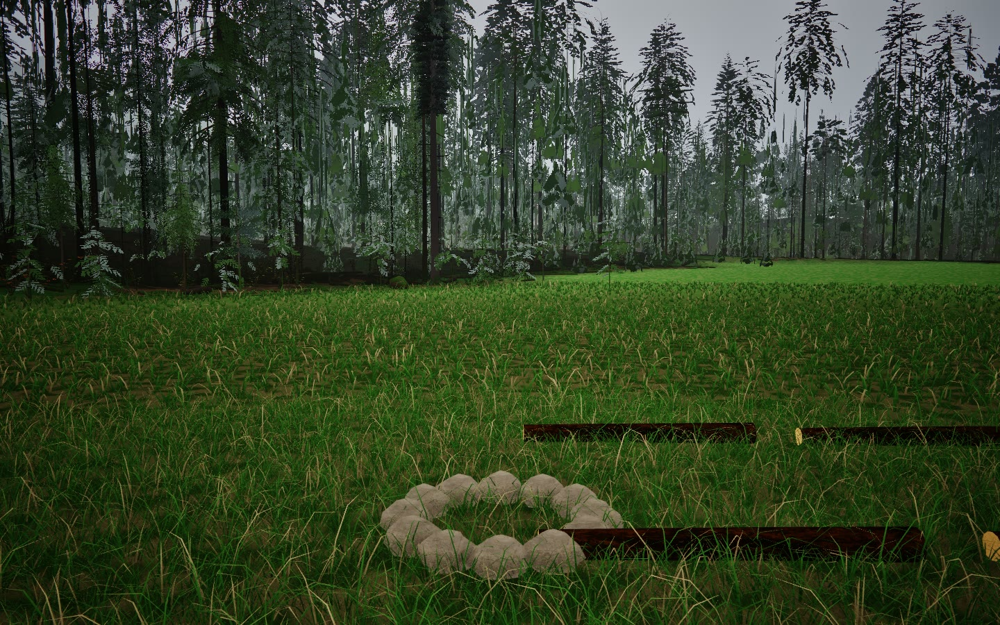

The engine, held to its exams
- passes today:
A recorded session replays to the same 64-bit checksum.
Receipt
claim A recorded session replays exactly, to the same 64-bit checksum. exam GenesisBench --replay on the supported valley recording (current world format; 600 ticks, 3 agents; recording sha256 dabb303a553284d1...) output Replay verified: tick=600, agents=3, checksum=9e2da0cad58a9a33 commit b4246f42c1fc36ee594d5216f278cb2ceaa27d7f (main; the SHA the run tested, from its "Validate inputs" step) date 2026-10-23 08:45 UTC machine Mac mini (Apple Silicon), macOS, release build scope One supported recording. Recordings in older world formats are refused by design, not replayed. - in work:
Laws kept for a world's life
receipt waits for a run on main - in work:
Journal refuses tampering
receipt waits for a run on main - in work:
Bounded observations
receipt waits for a run on main - in work:
Residents learn from experience
receipt waits for a run on main - passes today:
In its exams, water follows the shallow-water equations: a dam break follows Ritter's 1892 exact solution with a profile L1 error under 3 %, and its wet front lags. It is not yet live in the world.
Receipt
claim In its exams, water follows the shallow-water equations. It is not yet live in the world shown on this page. law shallowWaterSemiImplicitV1 (Casulli 1990) exams WaterFieldTests: 10 tests, 0 failures, among them still water over a bumpy bed does not move mass is conserved exactly while water runs downhill a dam break follows Ritter's solution at both clocks rain on a slope settles to the kinematic-wave sheet a channel settles at Manning's normal depth output EXAM damBreak L1 k=1 0.02653561303221988 k=48 0.02715297851681398 front k=1 290.0 m k=48 238.0 m exact 300.62948358402906 m EXAM kinematicSheet step=500 ms L1 0.001962163068997887 TOTAL: passed=10 failed=0 skipped=0 commit b4246f42c1fc36ee594d5216f278cb2ceaa27d7f (main; the SHA the run tested, from its "Validate inputs" step) date 2026-10-23 09:30 UTC machine Mac mini (Apple Silicon), macOS note the profile's L1 error is 2.7 %; the wet front lags the exact one (238 m against 301 m at the 48x clock), as the output line shows

Its first world: a real valley
Lake Quinault, Washington, from public USGS lidar at 1:1.
47.47° N, 123.84° WRelief from the engine's lidar tiles, not a game frame. Light from 315° at 45°.Light 95° at 4°: a lamp moved by scrolling, not the sun. Receipt

Receipt
picture Lake Quinault from its east end, looking west.
build d912eae4b, release build
binary sha256
55cb2dbe85ecfb852cc4fe8ddd2c7b3c215ad76a052594010cc2818139982000
rendered 2026-10-22 19:37:37 UTC, Mac mini (Apple Silicon), exit 0
camera 47.47518 N, 123.83198 W: the map location the photographer gave
a public photograph (Chris Light, "Lk Quinault (frm east)
1316.jpg", Wikimedia Commons); no GPS, error unknown; 1.6 m
above the ground (+/- 0.2 m); azimuth 265.4 deg true (+/- 0.0513
deg); pitch 0.0 deg (+/- 0.0138 deg); horizontal field of view
71.3 deg (+/- 1.5 deg); direction and pitch fitted to that
photograph's terrain skyline. No pixel of it is used.
world quinault-geo-v2; tick 311; world checksum cd08dd18752b50f8
note The lake shown is a surface at its recorded level, not the water
law.
master PNG, sha256
5d74b153550b6e6c89472e26dc9cb7503eb19646023ab058b955c2a57f969c1f
transform crop 1320:900:120:0; resize lanczos; webp cwebp -q 82 -m 6
-metadata none; jpeg ffmpeg mjpeg q 3; no grade
published lake-828.webp 828x564 sha256
63d7de2b9b09aa1a82143fa78e1fe3a1d2184d72b7e82adbb5da3f07968cf3b5
published lake-828.jpg 828x564 sha256
878fde0fff34d6d1dc50a48ed9500de01b6ea9f47166203498b09d17b82b7336
published lake-1320.webp 1320x900 sha256
7809f9235be42be67af12bce0625a4f7975595e44b67c437b3cf9d77b5902833
published lake-1320.jpg 1320x900 sha256
d171b88ea25ae9a280f387d607d2efe50cfeb42feb8f3909ba02e6e3661b9e19
checked No person in frame, checked by eye at full size. The left 120 px
were cut because a dark shape there could not be told from a
sapling.
Receipt
picture The camp clearing near the south shore, looking south to the
forest edge.
build d912eae4b, release build
binary sha256
55cb2dbe85ecfb852cc4fe8ddd2c7b3c215ad76a052594010cc2818139982000
rendered 2026-10-22 19:34:29 UTC, Mac mini (Apple Silicon), exit 0
camera 47.47028 N, 123.84115 W (+/- 1 m); 1.6 m above the ground (+/-
0.05 m); azimuth 180.0 deg true (+/- 0.5 deg); pitch -4.0 deg
(+/- 0.5 deg); horizontal field of view 71.3 deg (+/- 1 deg)
world quinault-geo-v2; tick 291; world checksum 6edab2fc41afc31
note The stone ring and the logs are still plain shapes.
master PNG, sha256
e364a2a1ab9484f129c776e0de81b3651d1bf9cf13668f2892c99204c45a0995
transform crop none; resize lanczos; webp cwebp -q 82 -m 6 -metadata none;
jpeg ffmpeg mjpeg q 3; no grade
published clearing-828.webp 828x518 sha256
18cfbabbc1161c1d46d377139187dd74ca3381d0f975eae6de827401ace4f855
published clearing-828.jpg 828x518 sha256
5085d713e3f38f0b4870b0a1647b94e0673cc31fc98151749e9b71ae4da1e126
published clearing-1440.webp 1440x900 sha256
58317762426a19481fd87c33136ab20cc647a3a531cb912b77b4bbcb8a9e1edd
published clearing-1440.jpg 1440x900 sha256
b174f6a5c704c6d2c2fdb949a55d8d78f9f72cc2a955933834240e5deaab24fb
checked No person in frame. The dark shapes at the forest edge are
ferns, checked under magnification.Receipt
picture The canopy, seen from below.
build d912eae4b, release build
binary sha256
55cb2dbe85ecfb852cc4fe8ddd2c7b3c215ad76a052594010cc2818139982000
rendered 2026-10-22 19:37:04 UTC, Mac mini (Apple Silicon), exit 0
camera 47.47125 N, 123.84112 W (+/- 1 m); 1.6 m above the ground (+/-
0.05 m); azimuth 0.0 deg true (+/- 0.5 deg); pitch 62.0 deg (+/-
0.5 deg); horizontal field of view 63.0 deg (+/- 1 deg)
world quinault-geo-v2; tick 356; world checksum c426ac687bb49015
note The branch stubs are still stylised.
master PNG, sha256
8127f201d57e4b4a7c8789b3706f250a4644b4782cdbc1a046b41b01b89ffdc1
transform crop none; resize lanczos; webp cwebp -q 82 -m 6 -metadata none;
jpeg ffmpeg mjpeg q 3; no grade
published canopy-828.webp 828x518 sha256
b896ccb0ebdda2d1169a48c68a200a89c16df031eb4288a9bfd451293ebb61f2
published canopy-828.jpg 828x518 sha256
ad0ca788e44631467ef7087ced50f4b23d1daaba56f8bba8b67bb049c5ee6a20
published canopy-1440.webp 1440x900 sha256
c04346a3d017644e9b6e11bd626c17981c1ace2d2c5781f4d1d441573993e830
published canopy-1440.jpg 1440x900 sha256
85857d704857da2a7f16d9ba14718e727bffa89086437bb053699f0bedaf7764
checked No person in frame, checked by eye at full size.- provenance:
The ground is public USGS lidar at its true latitude, longitude and height. Height error is not yet tested.
Receipt
claim The valley is the real Lake Quinault, Washington, at 1:1. Its ground is public USGS lidar, set at its true latitude, longitude and height. kind provenance, not an exam ground USGS 3D Elevation Program 1 m lidar, Olympic Peninsula 2017 (vendor Quantum Spatial); USGS 1/3 arc-second DEM beyond it. U.S. Government works, public domain. lake USGS National Hydrography Dataset: Lake Quinault, GNIS 01531495 grid 2 m over 15 x 8 km around the lake, 32 m beyond datum NAD83(2011); heights NAVD88 frame +proj=tmerc +lat_0=47.475 +lon_0=-123.865 +k_0=1 +ellps=GRS80 manifest quinault-geo-v2 sha256 14b0a41d853490763d1ba814067538353f445e2618f448d52c9e6b13de00e71c untested height error against survey benchmarks - fact:
Lake Quinault lies within the Quinault Indian Reservation (U.S. Census boundary).
Receipt
claim Lake Quinault lies within the Quinault Indian Reservation (U.S. Census boundary). boundary U.S. Census Bureau TIGERweb, American Indian / Alaska Native areas: "Quinault Reservation", GEOID 3040; queried 2026-10-23. Seven points on the lake fall inside it; the boundary follows the shore, so the cameras on this page (on the shore) stand outside it and the water in frame 1 is inside it. - method:
How the relief above is drawn.
Receipt
picture The valley's relief, drawn from the engine's terrain tiles (USGS lidar). Not a game frame. manifest quinault-geo-v2, sha256 14b0a41d853490763d1ba814067538353f445e2618f448d52c9e6b13de00e71c tiles 120 fine tiles at 2 m, each checked against the manifest; their hashes in order hash to 31bc277bdf6cb5b3 extent 15 x 8 km, north up, 4 m per pixel method 2 x 2 block mean of the 2 m nodes; Horn (1981) hillshade, light from azimuth 315 deg at 45 deg altitude; land grey 24 + 231 x max(0, cos), so black is water only: lake and river nodes, which the survey flattens and whose bed is unknown; no colour, atmosphere or grade check 969549 black cells = 969549 water + 0 no-data cells tool tools/relief.py in this repository, Python standard library only master PNG 3750 x 2000 grey, sha256 fac0857517e0b04214a5843cb539f9580ee9cd883c70f9f43a4e68f06c9591ea pixel data sha256 d04bb6559e15efc15608402ff79393b8334e34c83119d34f29969e1d33121076 published relief-1280.webp 1280x682 sha256 89e1021887f74cae57346490fe1c0423be3267b1d19dce1d646561753a9a787d published relief-1920.webp 1920x1024 sha256 c550e145b563f5a8817b1da70bebc920666214c221f1aae462715e126d73233d published relief-1920.jpg 1920x1024 sha256 611049176e40ec2afabc6191fd89e02687d277e7d287824ee92bca4495063c6a published relief-2560.webp 2560x1366 sha256 67b16cad30ea340de3eecffbeacb8733919a8a3696a419b124a958250adc23c4 published relief-3750.webp 3750x2000 sha256 69ebaa9e64c0b42befb154bf382d84ece6c1202e368ae28d3f71446a74eb6ba7 heights height-8m.png 1875 x 1000, 8 m; height-16m.png 937 x 500, 16 m (phones) R x 256 + G = height above NAVD88 0 in 5 cm steps; B = 255 for water; means of the cells above; lit live in your browser by the same method (Horn's 3 x 3 kernel, grey 24 + 231 x max(0, cos)) from these heights, with a lamp moved as you scroll (not the sun) rgb sha256 87afc2b599b109d850164dedd586d16eb506ed8743a60685afb2d514a795ea93 a7ab9fcf1c396ed8cb018aa6470f30e69d19004f98ac6de8d3151d27ed8daa02 published height-8m.png sha256 ea7ee6f218052df3596042dab2badc8bd11532d94fcc65b72edae9447650bcd6 published height-16m.png sha256 e8b678570eb1772a0ab211d1353ebe333231eddb02fb9881b9cbe84d2b9c3476 marks camera positions and fields of view copied from each frame's receipt
Roadmap
passes todayin worknext
- Engine
- Bodies
- in work: legs carry each measured body
- next: contact forces from matter
- next: falls and stepping over logs
- next: arms and hands that grip
More
Next, in order: contact between bodies and solids as forces from the matter that meets; stepping over logs and roots, and falls when a foot is caught; step timing from the body's own energy cost; arms and hands that reach and grip under the same law; segment masses from each body's own measurements instead of a sex label.
epic #1489
- Forest
- in work: forest floor plant cover
- in work: one stem profile per tree
- next: missing species, standing dead
- next: berry shrubs, fruit in season
- next: trees beyond the lidar area
More
Next for the forest, in order: the measured plant cover of the forest floor at every distance; one stem profile per tree, read by contact, sight, fire warmth, wood and the drawn trunk; the missing species and standing dead trees; berry shrubs whose fruit is food in season; trees beyond the lidar survey area; leaves that change and fall with the seasons.
epic #1208
- Forest life
- in work: tree mass from field data
- in work: tree growth from absorbed light
- next: seeds that take root
- next: dead trees that rot
- next: animals in the same book
More
Next for the life cycle, in order: measured trees that grow from the light they absorb and the water they take up, with the free regrowth of food removed; seeds that fall, wait for spring and take root by seedbed, best on rotting logs; dead trees that stand, fall and rot into the next seedbed; the same book for animals once bodies can be born and die; fungi that feed on decay or on living trees.
epic #1546
- Animals
- in work: hair in wind and water
- next: hair touching skin and ground
- next: GPU cost per head
More
Next, in order: measure the cost of hair and fur on the GPU for each head, inside equal frame-time tiers. Add contact between strands, and between strands and the body, through the one contact law. Add the drag a fibre feels in still air when it oscillates (unsteady Stokes drag), the friction of air along a fibre, and the fibre's own material damping. Then strands drawn on a head, the law's first reader, and one review of the whole rod law. Later the same law carries grass, twigs and ropes.
epic #1460
- Animal calls
- in work: owl hoot from bird physics
- next: owl calls at night
- next: forest falls silent near danger
More
Next, in order: one law of sound for a bird's vocal organ and tract, and for an insect's stridulation, with only each species' motor gestures fitted to openly licensed recordings. First a barred owl perched in the forest, calling at night and dawn, its call compared with published measurements and with held-out recordings in a blind test. Then a dawn songbird recorded at the valley in October, crickets only where the season and temperature allow, and alarm calls and silence when an animal perceives a predator or a person.
epic #1541
- Building
- in work: building from felled logs
- next: first night survival
- next: autumn food
- next: character editor
More
Next, in order: a player lays out a building plan that no law reads, and real felled logs fill it one by one through the one construction law. Then the first night of a survival world: heat, fire and shelter decide whether a body reaches dawn. Then autumn food: a carried ration, then fish cooked on a fire. Then a character editor that sets a body's birth inputs inside the ANSUR II survey of US Army personnel, so that its build sets its gait, its load and its cold tolerance. That survey holds no elderly or disabled bodies, so the editor cannot make them yet; player bodies are always adults.
epic #1484
- Vehicles
- in work: Pickup engine and gearbox
- in work: Fuel economy against EPA
- next: Park, reverse and starter
- next: Vehicles in the shared world
- next: Tyre rolling resistance measured
More
Next for aviation and vehicles, in order. The pickup gets a gear selector with park, reverse and neutral, and a starter, so a stalled engine or an empty tank can be recovered. Vehicles are then born in the shared world on its real terrain and breathe its air. The fuel-economy exams against public EPA measurements are reworked part by part, each declared part replaced only by a measured one chosen by a rule written beforehand. Then road-load measurement of tyre rolling resistance, more vehicles on the same law, and the airliner sharing it.
epic #1448
Not caused yet, and named so: bodies moved by animation clips, grove regrowth, forest transpiration, the parentless newborn and the plants' intake. Nothing in work or next is claimed until it passes its exam. The game is paused until bodies move by cause, and invites no one to play until then.